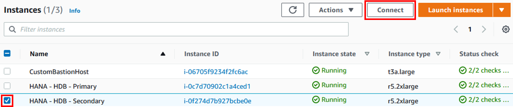
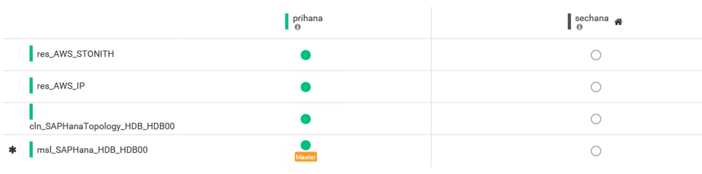
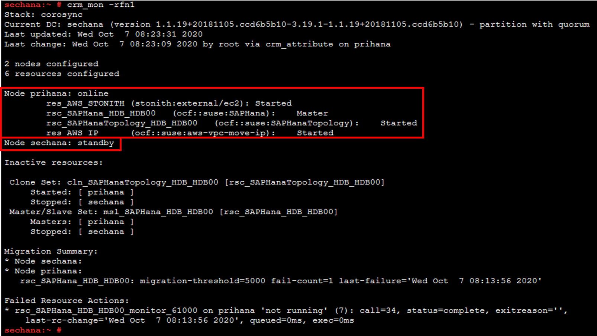
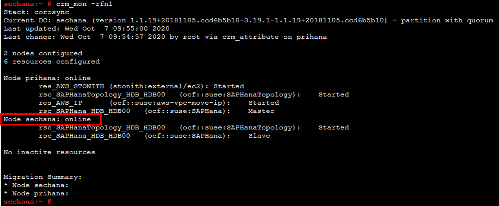
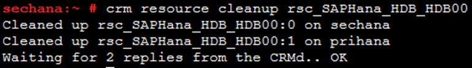

Task 02. Take a node offline
In this lab, we will show you how to put a cluster node on standby so that all cluster services running on the cluster node are automatically migrated to the secondary node.
Architecture

Taking a node offline
-
Connect to Bastion Host and check the Dashboard of HAWK web (refer to Lab02)
- OYou can see that Overlay IP Resource has been moved to sechana.

- OYou can see that Overlay IP Resource has been moved to sechana.
-
Connect to sechana and check the cluster and HSR status.
-
Connec to EC2 Instance Console
-
Select HANA-HDB-Secondary instance, click Action, and click Connect. 
-
Select Session Manager and click Connect. Connect to sechana instance through Session Manager

-
Check the cluster status.
- crm_mon is a command that provides the current state of the cluster (using root user).
- Execute the command below to check if sechana is in Master status.
sudo su - crm_mon -rfn1
-
Check SAP HANA System Replication (HSR) status.
- Use SAPHanaSR-showAttr to confirm that the prihana node is SOK. (Use root user)
sudo su - SAPHanaSR-showAttr
-
Run the command below to put Node2 (sechana) into standby mode. (Use root user)
sudo su - crm node standby sechana
The cluster starts prihana SAP HANA database, and takeover from the sechana. If the system replication synchronization was performed. Wait for the prihana to become brand new Primary.
-
Connect to Bastion Host and check the Dashboard of HAWK web (refer to Lab02)
- You can see that Overlay IP Resource has been moved to prihana. 
-
Check the cluster status until the resource is migrated from Node2 (sechana) to Node1 (prihana).
- crm_mon is a command that provides the current state of the cluster (using root user).
- Execute the command below to check if prihana is in Master status.
- Confirm that the sechana node is in the standby state.
sudo su - crm_mon -rfn1
-
Set Cluster Node2 (sechana) online (using root user)
sudo su - crm node online sechana -
Cluster status is checked until Cluster Node2 (sechana) is online.
- crm_mon is a command that provides the current state of the cluster (using root user).
- Execute the command below to check if sechana is in online status.
sudo su - crm_mon -rfn1
-
Cleans up the SAPHana resource status.
crm resource cleanup rsc_SAPHana_HDB_HDB00
© 2020, Amazon Web Services, Inc. or its affiliates. All rights reserved.